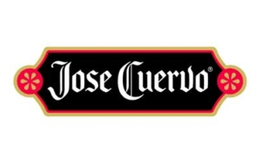
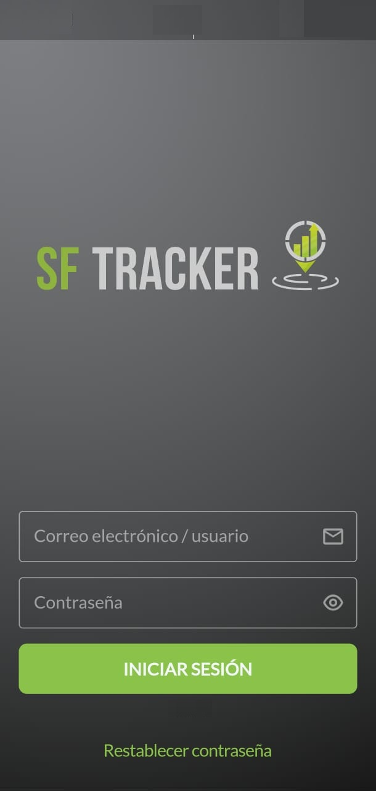

Sistematizamos y facilitamos el trabajo en Punto de Venta. Conectamos tu fuerza de ventas con herramientas tecnológicas de última generación en tiempo real.
Nuestros clientes y aliados estratégicos

En Deluca creemos que el futuro de los negocios depende de la optimización inteligente de sus recursos. No creamos software genérico; diseñamos soluciones estratégicas que eliminan la fricción operativa.
Nos comprometemos a que cada dato recolectado se convierta en una ventaja competitiva real para tu marca en el Punto de Venta.
Automatizamos los procesos operativos de tu equipo en campo.
Aplicaciones robustas capaces de operar de forma impecable en tiempo real.
Sistematiza y facilita el trabajo en Punto de Venta. Nuestro sistema operativo móvil (App) permite supervisar y controlar el buen funcionamiento de la fuerza de ventas en tiempo real.

⚡ Monitoreo Inteligente de Campo
Control preciso y transparente de tiempos de asistencia.
Medición exacta de permanencia por cada PDV asignado.
Registro inmediato de frentes, quiebres y exhibiciones.
SFTRACKER se adapta al plan de negocios y objetivos del proyecto a través de módulos dinámicos en unaApp.
Conectamos la plataforma con herramientas tecnológicas para la presentación estructurada y análisis de datos.
Impulsamos el crecimiento de tu equipo integrando módulos de e-learning especializados para capacitación continua.
Descubre proyectos reales donde convertimos la complejidad operativa de retail en eficiencia medible.